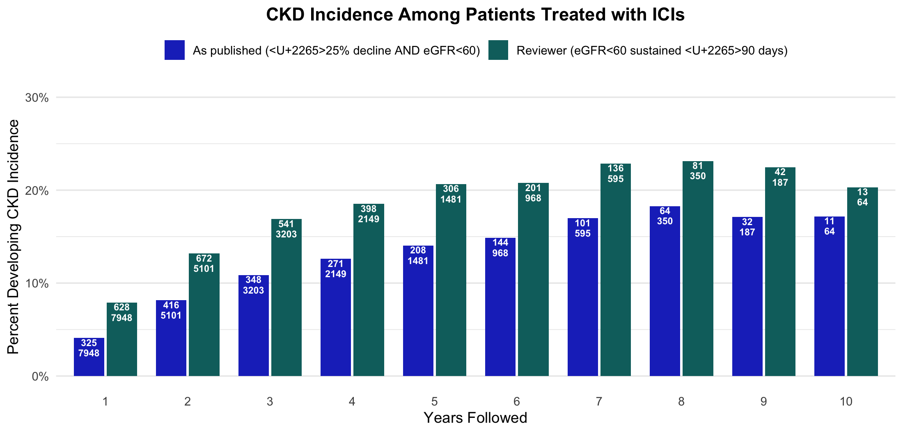
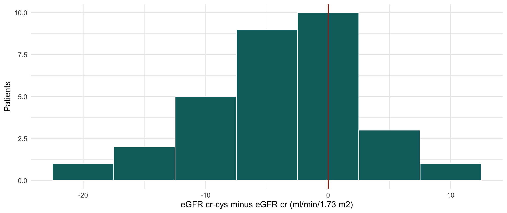

This page is additive. The Analysis tab and the published dataset are untouched — nothing here overwrites a published number. Every figure that moves is shown as as-published vs corrected so the effect of each fix is visible.
1 Definitions as implemented
The code below is the executed definition of every outcome, copied from the pipeline that produced the published dataset (Final cohort/Kavita final cohort 2026.Rmd and Final cohort/aki.Rmd). It is shown for reference and is not run here — click Show code on any block.
1.1 Baseline creatinine and eGFR
Show code
## Baseline = MEDIAN creatinine over the 90 days on/before the ICI date.pre_lab_median <-function(data, month, time, index_date, Group_Id) { index_date <-enquo(index_date) time_value <-if (month) time *30else time median_name <-paste0("pre_median_", Group_Id, "_", time_value, "days") data %>%filter(Group_Id ==!!Group_Id, grepl("^\\d+\\.\\d+$", Result), !is.na(Result)) %>%mutate(Result =as.numeric(Result)) %>%filter(Seq_Date_Time >= (!!index_date) - time_value, Seq_Date_Time <=!!index_date) %>%group_by(EMPI) %>%summarise(!!median_name :=median(Result, na.rm =TRUE), .groups ="drop")}pre_lab_baseline <-pre_lab_median(master_lab, month =FALSE, time =90,index_date = ICI_Dose_Date, Group_Id ="CRE")eGFR_CRE_baseline <-gfr_calc(pre_median_CRE_90days, male, age_ici) # CKD-EPI 2021pct_drop <-round((eGFR_CRE_baseline - eGFR_CRE) / eGFR_CRE_baseline, 3)
1.2 The “sustained for >= 90 days” engine
Show code
make_ckd_outcome_date <-function(data, id_var, date_var, condition_expr,days_threshold =90, outcome_name ="default") {## 1. label each lab, then group consecutive labs into runs working <- data %>%arrange(!!id_var, !!date_var) %>%group_by(!!id_var) %>%mutate(.cond =if_else(!!cond_q, 1L, 0L),.change = .cond !=lag(.cond, default =first(.cond)),.run =cumsum(.change))## 2. one row per run, and measure how long it lasted episodes <- working %>%group_by(!!id_var, .run) %>%summarise(.code =first(.cond), .start =first(!!date_var),.last =last(!!date_var), .groups ="drop") %>%group_by(!!id_var) %>%mutate(.end =lead(.start), # start of the NEXT run.end =if_else(is.na(.end), .last, .end), # final run: its own last lab.days =as.integer(.end - .start))## 3. event if any qualifying run reached the threshold episodes %>%group_by(!!id_var) %>%summarise(has_event =any(.code ==1L & .days >= days_threshold),event_date =min(.start[.code ==1L & .days >= days_threshold]))}
A qualifying run ends at the first lab that fails the condition, so the gap between the last qualifying value and that failing value counts toward the 90 days (a last-observation-carried-forward reading). For a patient’s final run there is no next run, so only the observed span counts.
1.3 The three outcome components
Show code
ckd_incidence <-make_ckd_outcome_date(data = master_lab_cre_after_baseline, id_var = EMPI, date_var = eGFR_CRE_date,condition_expr = pct_drop >0.25& eGFR_CRE <60& eGFR_CRE_baseline >=60,days_threshold =90, outcome_name ="ckd_incidence")ckd_progression <-make_ckd_outcome_date(data = master_lab_cre_after_baseline, id_var = EMPI, date_var = eGFR_CRE_date,condition_expr = pct_drop >0.30& eGFR_CRE_baseline <60,days_threshold =90, outcome_name ="ckd_progression")eskd_defination_1 <-make_ckd_outcome_date(data = master_lab_cre_after_baseline, id_var = EMPI, date_var = eGFR_CRE_date,condition_expr = eGFR_CRE <10,days_threshold =90, outcome_name ="eskd_defination_1")## kidney failure also counts an ESRD / dialysis / transplant diagnosis after ICIesrd_kt_after_ici <-dia_list_icd_after_index(master_dia, icd_code = esrd_kt_codes,index_date = ICI_Dose_Date)## composite: met at the first qualifying occurrence of any componentckd_composite <- eskd_composite ==1| ckd_incidence ==1| ckd_progression ==1time_to_ckd_composite <-pmin(time_to_eskd_composite, time_to_ckd_incidence, time_to_ckd_progression, na.rm =TRUE)
1.4 AKI
Show code
create_aki <-function(data, index_date = ICI_Dose_Date, Group_Id = EMPI,median_window_days =90, lowest_window_days =2) { df %>%filter(cre_date >!!index_date) %>%# <-- applied BEFORE the windows below,group_by(!!Group_Id) %>%# so the comparators are post-ICI onlymutate(median_cre_90days =sapply(seq_along(cre), function(i)median(cre[cre_date >= cre_date[i] - median_window_days & cre_date <= cre_date[i] -1])),lowest_cre_2days =sapply(seq_along(cre), function(i)min(cre[cre_date >= cre_date[i] - lowest_window_days & cre_date <= cre_date[i] -1])),aki_rule1 =!is.na(median_cre_90days) & (cre / median_cre_90days >=1.5),aki_rule2 =!is.na(lowest_cre_2days) & (cre >= lowest_cre_2days +0.3),aki_flag_record =ifelse(aki_rule1 | aki_rule2, 1, 0)) %>%summarise(aki =as.integer(any(aki_flag_record ==1, na.rm =TRUE)),aki_date =min(cre_date[aki_flag_record ==1]))}## AKI preceding or concurrent with the CKD compositeaki_before_ckd <-if_else(aki_days <= time_to_ckd_composite, 1, 0)
The Revision tab keeps this definition unchanged — the AKI variable and the 450 are exactly as published. What is added is a KDIGO grade for those events, which the published analysis never computed (see §6.1).
Only steroids passes excluded_names. Every other call — ppi, ace_arb, diu, statins and the eight chemotherapy agents — takes the lower branch and ascertains “ever in the record” rather than “on or before ICI”. See §2.1.
2 Bug register
Three defects in the pipeline changed numbers that appear in the manuscript. Each is listed with its location and the size of the effect it had. Every figure below was verified by first reproducing the published logic exactly, so each difference is the effect of a fix and not a porting artefact.
2.1 Defects that changed published results
#
Bug
Where
Result it moved
1
med_list() applies its pre-index date guard only when excluded_names is supplied. Every call without it silently becomes “ever in the record”.
Final cohort/Kavita final cohort 2026.Rmd:133, calls :706–734
Large. ppi 12,638 → 8,637; diu 9,375 → 6,420; statins 8,208 → 6,865; ace_arb 7,430 → 6,179; every chemo agent falls, so nephrotoxic_chemo (a covariate in every adjusted model) goes 8,580 (48.4%) → 6,940 (39.2%). See §2.2.
2
smoking is ascertained with no date filter at all (same for chf).
:921, :925
Post-ICI diagnoses leak into baseline: 8,883 → 6,815. smoking is a published model covariate.
2.2 What actually moved
Before any fix was applied, each variable was first recomputed using the published logic and checked against the published column. All 15 reproduced exactly, so every difference below is the effect of a fix and not a porting error.
Table 1: Baseline medication and comorbidity flags, N = 17,718.
Variable
As published
Corrected (pre-ICI only)
ppi
12638
8637
ace_arb
7430
6179
diu
9375
6420
statins
8208
6865
Bevacizumab
1273
817
Cisplatin
2295
2021
Carboplatin
5481
4420
Pemetrexed
2327
1923
Gemcitabine
2044
1217
Cetuximab
421
170
Trastuzumab
454
252
VEGF_TKI
1246
670
steroids
13157
13157
htn
10706
10706
smoking
8883
6815
3 Baseline characteristics on corrected data
Table 1 rebuilt on the corrected covariates — ppi, statins, smoking and nephrotoxic_chemo restricted to pre-ICI ascertainment, AKI from the repaired lookback. Everything else is identical to the published tables.
The four models the paper reports, re-fitted on the corrected covariates. Model specifications are verbatim from the published tab — only the ascertainment of ppi, statins, smoking and nephrotoxic_chemo differs (pre-ICI rather than “ever in the record”), together with the repaired AKI definition.
5 Reviewer request 1 — a less strict CKD incidence definition
The reviewers asked for incident CKD defined as eGFR < 60 sustained ≥ 90 days, dropping the ≥25% relative-decline requirement. ckd_progression and kidney failure are unchanged. The sustain engine is left exactly as published, so the only thing that changes is the definition itself.
Table 2: Incident CKD and the primary composite under each definition, whole cohort.
Definition
Incident CKD
Primary composite
as published (>=25% decline AND eGFR<60)
882
1110
reviewer (eGFR<60 only, same engine)
1372
1595
5.1 Incidence by years followed
Same construction as the published figure: the denominator is patients followed beyond year X with baseline eGFR ≥ 60, and the numerator counts incident CKD within year X excluding anyone who reached kidney failure in the same window, so the components stay mutually exclusive. The published bars reproduce exactly.

Figure 1: CKD incidence by years of follow-up. Bars are labelled n / N. The published definition (>=25% decline AND eGFR<60) is shown against the reviewer’s less strict definition (eGFR<60 alone), both on the published sustain engine.
Table 3: Numerators and denominators behind the figure. The ‘as published’ columns reproduce the published figure exactly on all ten years.
Years followed
N followed (baseline eGFR >= 60)
As published, n
As published, %
Reviewer defn, n
Reviewer defn, %
1
7948
325
4.1
628
7.9
2
5101
416
8.2
672
13.2
3
3203
348
10.9
541
16.9
4
2149
271
12.6
398
18.5
5
1481
208
14.0
306
20.7
6
968
144
14.9
201
20.8
7
595
101
17.0
136
22.9
8
350
64
18.3
81
23.1
9
187
32
17.1
42
22.5
10
64
11
17.2
13
20.3
NoteTwo changes were possible here; only one was made
“Sustained” can be read two ways, and the choice matters more than the definition change does. The published engine ends a qualifying run at the first lab that fails, so a measurement gap counts toward the 90 days (a last-observation-carried- forward reading). A stricter reading requires a confirmatory eGFR < 60 at least 90 days later with no intervening recovery.
The figure above holds the engine fixed at the published behaviour, so the bars show the reviewer’s change alone. Applying the stricter engine as well would give 1,040 incident-CKD events instead of 1,372 — and would push the later years below the published bars, which is why the two changes are kept separate.
6 Reviewer request 2 — the AKI → CKD group
Table 4: Patients with an AKI prior to or concurrent with the CKD composite. The published row reproduces 450 / 1,110 = 40.5%, the paper’s ‘41%’.
AKI definition
CKD composite
AKI before/concurrent
%
as published (aki_0120.xlsx)
1110
450
40.5
6.1 KDIGO grade
AKI is the published definition, unchanged. A rise to >1.5-fold the median creatinine over the preceding 90 days, or a rise of >0.3 mg/dL over the lowest creatinine in the preceding 48 hours, evaluated across all creatinine values in follow-up. The 450 below is the published figure.
The KDIGO grade is new — the published analysis produced only a binary aki flag. Grade is assigned against the same moving 90-day median that detects the event, so every detected AKI receives a grade: 1.5-1.9x = stage 1, 2.0-2.9x = stage 2, and >= 3.0x (or creatinine >= 4.0 mg/dL, or RRT) = stage 3. KDIGO grades by magnitude rather than by a calendar window, so the episode is the run of flagged draws from the first flag until creatinine falls back below threshold.
Table 5: KDIGO grade among the 450, peak across the AKI episode, graded against the same moving 90-day median that detects the event.
KDIGO grade
N
%
1
316
70.2
2
76
16.9
3
58
12.9
Which criterion makes a patient stage 3
Table 6: Criteria overlap, so these do not sum to the stage-3 total. The last row is the one that matters: RRT is the only criterion the data under-captures, and it is the sole basis for very few patients.
Criterion
N
% of stage 3
>= 3.0 x the 90-day median
46
79.3
creatinine >= 4.0 mg/dL
37
63.8
dialysis / RRT code
NA
10.3
RRT code as the ONLY qualifying criterion
0
0.0
Grade counts
Table 7: Grade is the peak across the AKI episode.
Window
N
Stage 1
Stage 2
Stage 3
No grade
peak across the AKI episode
450
316
76
58
0
6.2 Corticosteroids within 30 days after the AKI
Table 8: Systemic corticosteroid dispensing in the 30 days following the AKI date.
Metric
N
%
AKI->CKD patients
450
100.0
with a systemic steroid within 30d after AKI
217
48.2
Patient-level medication detail — drug name, order date, days from the AKI, care setting, route, and KDIGO grade — is in aki_steroid_kdigo.xlsx (450 rows). That file contains EMPI and is kept local; it is not part of this site.
7 Reviewer request 3 — cystatin C in the five-year survivors
The reviewer asked about patients with a simultaneous cystatin C and creatinine. The scope here is deliberately narrow: only the patients followed at least five years who met the primary outcome, and only labs drawn between the ICI start date (day 0) and year 5.
Both analytes come from a single RPDR extract requested for this question, whose Group_Id takes two values — CRE and CYSTATC (LOINC 33863-2, mg/L) — so the two halves of every pair share a source and a date basis.
7.1 Cohort
Table 9: Patients followed at least 5 years who met the primary outcome, narrowed to those with a same-day creatinine and cystatin C between day 0 and year 5.
Step
N
Followed >= 5 years and met the primary outcome
256
Of those, >= 1 cystatin C between day 0 and year 5
32
Of those, >= 1 same-day creatinine + cystatin C pair
31
Table 10: How the 31 patients contribute matched pairs. A matched pair is one day on which the patient had both a creatinine and a cystatin C.
Value
Patients
31
Matched pairs in total
99
Patients with exactly 1 matched pair
13
Patients with 2 or more matched pairs
18
Matched pairs per patient, median (IQR)
2 (1, 3)
Matched pairs per patient, range
1 - 10
Creatinine draws on a matched day, mean
1.22
Matched days with more than one creatinine (median used)
18
Cystatin C draws on a matched day, mean
1.00
Table 11: Every matched pair: the day the patient had both a creatinine and a cystatin C, the two values, and the three eGFRs computed from them. Patients are numbered arbitrarily, ordered by how many pairs they have; days are counted from ICI start. No identifier or calendar date appears.
Patient
Days since ICI
Creatinine (mg/dL)
Cystatin C (mg/L)
eGFR cr
eGFR cr-cys
eGFR cys
Diff (cr-cys - cr)
1
262
1.31
1.71
49.3
43.9
36.8
-5.4
2
860
1.73
1.71
43.3
40.6
37.4
-2.6
3
1243
1.27
1.95
42.5
35.9
27.4
-6.6
4
1320
1.57
1.78
32.7
34.2
30.9
1.4
5
1442
1.18
1.51
53.9
50.0
42.4
-3.9
6
1562
1.01
1.18
63.3
64.9
57.9
1.6
7
1567
2.37
2.35
29.5
26.6
24.4
-2.8
8
1699
0.86
1.22
76.3
68.8
55.2
-7.6
9
1707
1.04
1.69
58.5
47.0
35.0
-11.5
10
1771
1.41
1.15
52.9
60.2
61.5
7.2
11
1778
1.15
1.42
72.4
59.6
48.6
-12.8
12
1782
2.01
2.18
27.2
27.4
25.3
0.1
13
1786
1.17
2.16
51.8
36.9
25.5
-14.9
14
724
1.52
1.46
45.7
46.3
43.2
0.6
14
1338
1.48
1.90
47.2
38.3
30.5
-8.9
15
1342
1.25
1.73
53.9
45.6
37.2
-8.3
15
1587
1.22
1.60
55.8
49.2
41.2
-6.6
16
1347
2.35
2.17
29.2
28.1
26.8
-1.1
16
1689
1.97
2.17
36.1
31.0
26.8
-5.1
17
1632
2.89
2.65
17.3
19.1
19.3
1.8
17
1696
1.68
1.81
33.1
34.5
32.0
1.3
18
1764
0.99
1.50
81.4
59.6
43.4
-21.9
18
1766
0.88
1.34
91.8
68.6
50.4
-23.1
19
168
1.83
2.35
30.9
27.4
23.2
-3.5
19
1441
1.10
1.60
57.2
48.9
38.7
-8.3
19
1580
0.65
1.23
100.1
78.0
54.8
-22.1
20
1218
1.21
1.51
51.0
48.6
41.8
-2.4
20
1337
1.42
1.56
42.1
43.4
40.0
1.3
20
1573
1.38
1.72
43.5
40.9
35.1
-2.7
21
1290
1.30
1.25
63.7
62.3
58.3
-1.4
21
1421
1.54
1.19
52.0
59.0
62.2
7.0
21
1763
1.64
1.42
48.2
49.7
49.2
1.5
22
1507
1.89
2.89
36.1
24.6
17.7
-11.5
22
1567
1.23
1.81
60.5
44.7
33.0
-15.8
22
1569
0.98
1.73
79.4
52.4
35.1
-27.1
23
1689
1.38
1.65
57.5
47.6
39.5
-9.8
23
1778
1.41
1.71
56.0
45.8
37.7
-10.2
23
1785
1.32
1.64
60.6
49.0
39.8
-11.6
24
1751
2.01
2.84
30.9
24.2
19.4
-6.8
24
1752
2.05
2.75
30.3
24.5
20.2
-5.8
24
1753
1.98
2.66
31.5
25.6
21.2
-5.9
25
1136
1.24
1.24
53.0
58.3
56.7
5.3
25
1206
1.09
1.23
61.9
62.9
57.3
1.1
25
1374
1.25
1.20
52.5
59.6
59.2
7.1
25
1520
1.05
1.02
64.7
74.3
73.5
9.6
25
1751
1.01
1.15
67.8
69.1
62.7
1.3
26
891
2.41
2.14
26.3
26.8
26.0
0.5
26
907
2.22
2.17
29.0
27.7
25.5
-1.3
26
1240
2.42
2.31
26.2
25.2
23.5
-1.0
26
1401
2.54
2.14
24.7
26.0
26.0
1.3
26
1499
2.72
2.51
22.8
22.1
21.1
-0.6
26
1688
2.87
2.49
21.3
21.6
21.3
0.3
26
1729
2.82
2.72
21.8
20.4
18.9
-1.4
27
7
0.89
0.90
79.4
90.0
87.1
10.5
27
21
0.99
0.78
69.9
93.8
103.1
23.9
27
28
1.21
0.86
54.9
78.9
92.5
23.9
27
42
1.03
0.67
66.7
96.4
111.3
29.8
27
49
1.10
0.69
61.6
92.2
109.7
30.6
27
63
1.17
0.66
57.2
90.4
112.1
33.2
27
70
1.27
0.71
51.8
84.5
108.1
32.6
27
83
1.05
0.86
65.1
85.2
92.5
20.1
27
112
1.09
1.21
62.3
64.0
58.8
1.7
28
948
3.96
2.36
15.8
20.0
24.2
4.2
28
977
1.73
1.99
42.7
35.8
30.3
-6.9
28
1031
1.53
1.38
49.5
50.9
49.3
1.4
28
1171
1.41
1.32
54.6
55.1
52.3
0.5
28
1284
1.39
1.30
55.6
56.2
53.4
0.7
28
1480
1.43
1.64
53.7
46.2
39.2
-7.5
28
1648
1.41
1.48
54.6
50.4
44.9
-4.2
28
1744
1.60
1.32
46.9
51.5
52.3
4.5
28
1760
1.57
1.40
48.0
49.7
48.4
1.7
29
963
1.31
1.27
61.5
60.3
56.2
-1.3
29
1073
1.17
1.12
70.5
70.7
66.4
0.2
29
1152
1.14
1.06
72.7
74.8
71.4
2.1
29
1200
1.20
1.13
68.4
69.3
65.6
0.9
29
1241
1.11
1.12
75.1
72.8
66.4
-2.3
29
1296
1.29
1.30
62.7
59.7
54.4
-3.0
29
1415
1.05
1.08
80.3
77.1
69.6
-3.1
29
1639
1.50
1.19
52.3
58.9
61.2
6.6
29
1765
1.48
1.16
53.2
60.5
63.3
7.4
30
1380
2.19
2.54
29.0
25.8
23.0
-3.3
30
1427
1.95
2.13
33.4
31.5
29.1
-1.9
30
1457
1.99
2.45
32.6
27.9
24.2
-4.7
30
1555
2.37
2.97
26.4
21.9
18.7
-4.6
30
1579
3.52
4.06
16.4
13.8
12.4
-2.6
30
1622
2.56
2.81
24.1
21.9
20.2
-2.2
30
1643
2.17
3.11
29.4
22.1
17.6
-7.2
30
1721
3.08
2.95
19.3
19.1
18.9
-0.2
30
1804
2.58
3.14
23.9
20.0
17.4
-3.9
31
933
2.20
2.55
28.8
24.3
20.4
-4.6
31
1005
2.02
2.38
31.9
26.8
22.3
-5.1
31
1165
2.70
2.87
22.6
19.8
17.4
-2.8
31
1496
2.70
3.04
22.6
18.9
16.1
-3.6
31
1497
2.91
3.20
20.6
17.5
15.1
-3.1
31
1498
3.09
3.30
19.2
16.5
14.5
-2.7
31
1499
3.04
3.32
19.5
16.6
14.4
-3.0
31
1502
2.76
3.01
21.9
18.8
16.3
-3.1
31
1512
2.52
2.81
24.5
20.9
17.9
-3.6
31
1620
2.52
3.51
24.5
17.6
13.3
-6.9
Where a patient had more than one creatinine on the day of a cystatin C, that day’s median creatinine is used. Cystatin C was never drawn more than once on one day. A patient with several matched pairs is reduced to a single value by averaging across them, so each of the 31 counts once.
7.2 Distribution of the difference

Figure 2: Per-patient difference between eGFR cr-cys and eGFR cr. Values left of the line are patients whose estimated function is worse once cystatin C is included.
Aggregate results only; cells below 11 suppressed. Published inputs untouched.